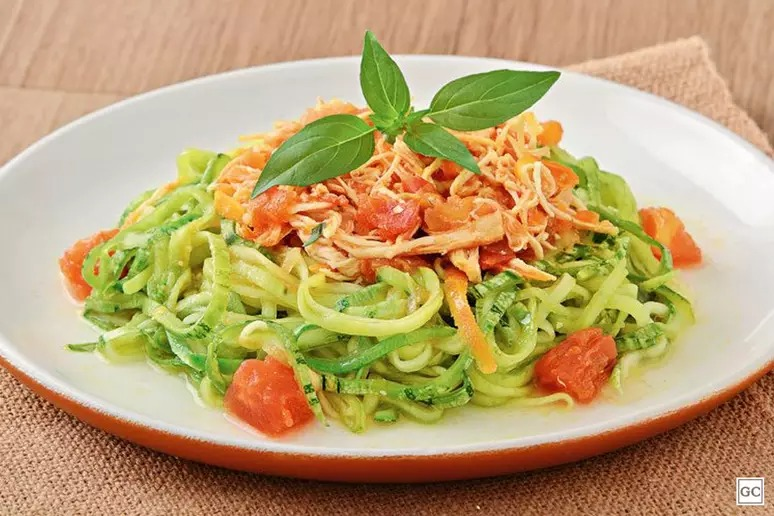
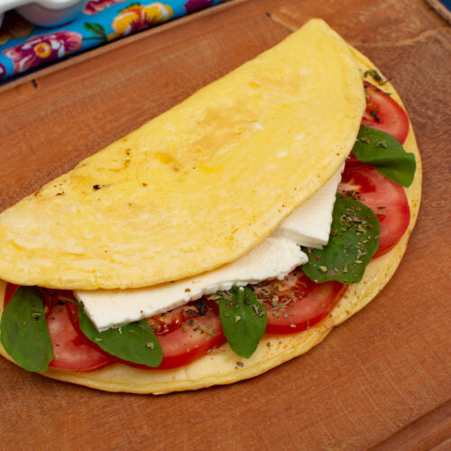
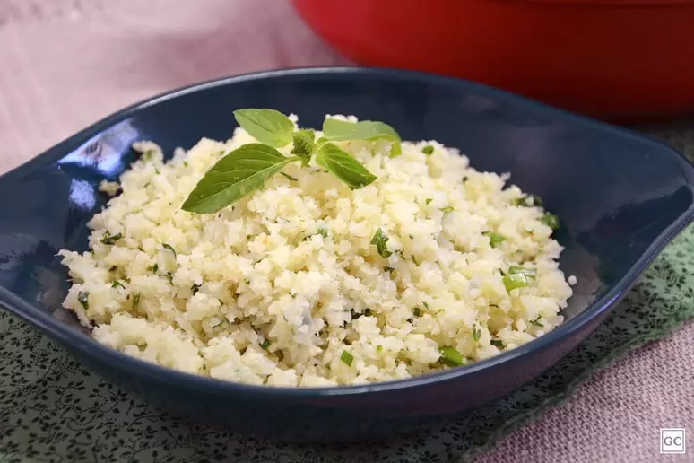

🍽️ Receitas Fitness para Diversos Objetivos
Alimentação saudável é essencial para alcançar seus objetivos fitness. Abaixo, apresentamos receitas adequadas para diferentes metas: perder peso, ganhar massa muscular e manter o peso.
🔥 Para Perder Peso
Espaguete de abobrinha com frango: Uma opção leve e nutritiva, substituindo a massa tradicional por abobrinha. Veja a receita.
💪 Para Ganhar Massa Muscular
Crepioca proteica: Combina ovos e tapioca, fornecendo proteínas e carboidratos ideais para o crescimento muscular. Veja a receita.
⚖️ Para Manter o Peso
Arroz de couve-flor fit: Uma alternativa leve ao arroz tradicional, rica em fibras e nutrientes. Veja a receita.